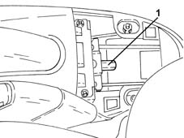
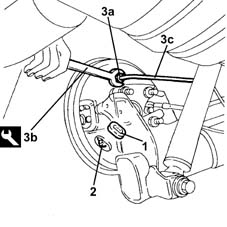
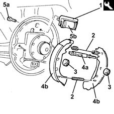
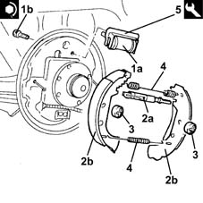
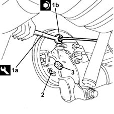

3320B20 Rear brake shoe CYLINDER (one) left or right - Replace.
- Path
- Procedures > 33 BRAKING SYSTEM > 3320 DRUM BRAKES > 3320B REAR DRUM BRAKES > 3320B20 Rear brake shoe CYLINDER (one) left or right - Replace.
- Kind
- repair procedure (removal / refitting; the operation number is the code)
- Applies to
- all engines; all production periods
- Interactive page
- https://sloeber94.github.io/elrnDB-lYpsln/en/#/2429161
Applies to: all engines; all production periods
 Removing
Removing
 Refitting
RefittingPosition the vehicle on the ramp.
Proceed with removal 7040L22 REAR TRIM on TUNNEL -R.R. .
FOR LEFT REAR BRAKE SHOE CONTROL CYLINDER
Proceed with removal 4450B06 left rear wheel r r .
FOR RIGHT REAR BRAKE SHOE CONTROL CYLINDER
Proceed with removal 4450B08 right rear wheel r r .
Proceed with removal 3320B30 lh or rh rear brake drum (one) r r .
1. Slacken the handbrake cable adjustment nut.

Applies to: all engines; all production periods
Remove the protective cap on the rear brake shoe control cylinder
Connect the collection system (pipe and reservoir) to the bleed valve on the rear brake shoe control cylinder.
Loosen the bleed valve on the rear brake shoe control cylinder and wait for the brake-clutch reservoir and pipes to drain.
1. Remove the protective cover.
2. Disconnect the handbrake control cable from connection on the rear brake shoes.
3. Undo connector (3a) using wrench (3b) and disconnect rear brake pipe (3c) from the rear brake shoe control cylinder.
 | Name | Country |
|---|---|---|
3b | Box wrench for brake fittings | 1.856.132.000 |

Applies to: all engines; all production periods
1. Position the tool on the rear brake shoe control cylinder.
| Name | Country |
|---|---|---|
1 | Bracket | 1.872.257.000 |
2. Use the tool to remove the rear brake shoe return springs.
| Name | Country |
|---|---|---|
- | Pliers | 1.881.136.000 |
3. Remove the rear brake shoe clips.
4. Remove the play take-up device (4a) together with the rear brake shoes (4b).
5. Undo bolt (5a) and remove the rear brake shoe cylinder (5b) with the tool.

Applies to: all engines; all production periods
Refitting
RemovingPosition the special tool on the new rear brake shoe cylinder.
| Name | Country |
|---|---|---|
- | Bracket | 1.872.257.000 |
1. Refit rear brake shoe cylinder (1a) and secure by tightening bolt (1b) to the specified torque.
 | Fastening | Component | Ø | Value (daNm) |
|---|---|---|---|---|
1b | Bolt | REAR BRAKE DRUM CYLINDER | M6 | 0.9 ÷ 1.1 |
2. Refit play take-up device (2a) together with rear brake shoes (2b).
3. Refit the rear brake shoe clips.
4. Refit the rear brake shoe return springs.
5. Remove the tool from the rear brake shoe control cylinder.
| Name | Country |
|---|---|---|
5 | Bracket | 1.872.257.000 |

Applies to: all engines; all production periods
1. Use tool (1a) to tighten fitting (1b) of the rear brake pipe (1c) to the rear brake shoe cylinder to the specified torque.
| Name | Country |
|---|---|---|
1a | Box wrench for brake fittings | 1.856.132.000 |
| Fastening | Component | Ø | Value (daNm) |
|---|---|---|---|---|
1b | Connector | RIGID PIPE REAR CYLINDERS (ABS) | - | (Rear brake shoe cylinder side.) 1.4 ÷ 1.8 |
2. Connect the handbrake control cable to the fitting on the rear brake shoes.
3. Place the protective cover back in its housing.

Applies to: all engines; all production periods
Proceed with refitting 3320B30 lh or rh rear brake drum (one) r r .
Proceed with refitting 0010T64 brake and or clutch fluid check level and top up as necessary .
Proceed with refitting 0010T65 hydraulic brake system bleed air .
FOR LEFT REAR BRAKE SHOE CONTROL CYLINDER
Proceed with refitting 4450B06 left rear wheel r r .
FOR RIGHT REAR BRAKE SHOE CONTROL CYLINDER
Proceed with refitting 4450B08 right rear wheel r r .
Proceed with refitting 3380A04 handbrake - check travel .
Proceed with refitting 7040L22 REAR TRIM on TUNNEL -R.R. .
Remove the car from the ramps.
Topics linked from this page (7)
- 0010T64 brake and or clutch fluid check level and top up as necessary
- 0010T65 hydraulic brake system bleed air
- 3320B30 lh or rh rear brake drum (one) r r
- 3380A04 handbrake - check travel
- 4450B06 left rear wheel r r
- 4450B08 right rear wheel r r
- 7040L22 REAR TRIM on TUNNEL -R.R.